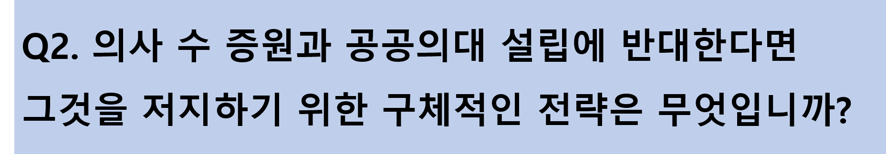

일차의료의 쇠락에는 여러 가지 원인이 있지만 가장 근본적인 원인이 바로 저수가에 있다고 봅니다. 한마디로 ‘기승전수가’입니다. 필수진료과도 저수가와 의료분쟁 등 때문에 고사 위기에 직면해있으며, PA 역시 저수가로 인해 의사 인력을 채용하지 않고 비의사를 사용하다 보니 발생한 문제입니다. 이는 경제적인 접근과 해결책이 필요합니다. 의료서비스의 질은 의료수가에 비례한다는 것을 널리 알리겠습니다. 의료전달체계 역시 규모의 경제에 뒤처진 일차의료의 고사에서 출발합니다. 일차의료를 살리는 것이 오히려 불요불급한 의료비용을 줄이고 국민들에게 양질의 의료서비스를 제공할 수 있다는 것을 국민들께 알리고 정부와 국회를 설득하겠습니다. 그러기 위해서 저수가 문제에 대한 보다 심도 있는 연구를 위해 의료정책연구소를 강화하고 국내외 석학들에게 연구를 위탁하겠습니다. 그 결과물들을 널리 알리기 위한 다양한 홍보매체들도 이용하겠습니다. 의협이 정치성을 배제하고 정부나 국회에 대한 신뢰를 쌓아 이러한 작업들이 받아들여질 수 있도록 노력하겠습니다. 의협회장의 역할은 이러한 작업들을 위해 의사와 국민 사이의 가교가 되는 것입니다. 의협회장이 해야 할 일이 많겠지만, 가장 중요한 핵심은 의사 회원들을 보호하고 나아가 국민을 보호하는 것을 목표로 해야 합니다. 국민의 신뢰를 받지 못하는 의협은 정부나 국회를 상대로 제대로 설득작업을 할 수 없습니다. 그래서 의협이 정치적인 중립을 지키고 전문가로서 위상을 강화해야 한다는 것입니다. 그러한 임무를 제가 하겠습니다. 감사합니다. 일차의료의 쇠락에는 여러 가지 원인이 있지만 가장 근본적인 원인이 바로 저수가에 있다고 봅니다. 한마디로 ‘기승전수가’입니다. 필수진료과도 저수가와 의료분쟁 등 때문에 고사 위기에 직면해있으며, PA 역시 저수가로 인해 의사 인력을 채용하지 않고 비의사를 사용하다 보니 발생한 문제입니다. 이는 경제적인 접근과 해결책이 필요합니다. 의료서비스의 질은 의료수가에 비례한다는 것을 널리 알리겠습니다. 의료전달체계 역시 규모의 경제에 뒤처진 일차의료의 고사에서 출발합니다. 일차의료를 살리는 것이 오히려 불요불급한 의료비용을 줄이고 국민들에게 양질의 의료서비스를 제공할 수 있다는 것을 국민들께 알리고 정부와 국회를 설득하겠습니다. 그러기 위해서 저수가 문제에 대한 보다 심도 있는 연구를 위해 의료정책연구소를 강화하고 국내외 석학들에게 연구를 위탁하겠습니다. 그 결과물들을 널리 알리기 위한 다양한 홍보매체들도 이용하겠습니다. 의협이 정치성을 배제하고 정부나 국회에 대한 신뢰를 쌓아 이러한 작업들이 받아들여질 수 있도록 노력하겠습니다. 의협회장의 역할은 이러한 작업들을 위해 의사와 국민 사이의 가교가 되는 것입니다. 의협회장이 해야 할 일이 많겠지만, 가장 중요한 핵심은 의사 회원들을 보호하고 나아가 국민을 보호하는 것을 목표로 해야 합니다. 국민의 신뢰를 받지 못하는 의협은 정부나 국회를 상대로 제대로 설득작업을 할 수 없습니다. 그래서 의협이 정치적인 중립을 지키고 전문가로서 위상을 강화해야 한다는 것입니다. 그러한 임무를 제가 하겠습니다. 감사합니다. 일차의료의 쇠락에는 여러 가지 원인이 있지만 가장 근본적인 원인이 바로 저수가에 있다고 봅니다. 한마디로 ‘기승전수가’입니다. 필수진료과도 저수가와 의료분쟁 등 때문에 고사 위기에 직면해있으며, PA 역시 저수가로 인해 의사 인력을 채용하지 않고 비의사를 사용하다 보니 발생한 문제입니다. 이는 경제적인 접근과 해결책이 필요합니다. 의료서비스의 질은 의료수가에 비례한다는 것을 널리 알리겠습니다. 의료전달체계 역시 규모의 경제에 뒤처진 일차의료의 고사에서 출발합니다. 일차의료를 살리는 것이 오히려 불요불급한 의료비용을 줄이고 국민들에게 양질의 의료서비스를 제공할 수 있다는 것을 국민들께 알리고 정부와 국회를 설득하겠습니다. 그러기 위해서 저수가 문제에 대한 보다 심도 있는 연구를 위해 의료정책연구소를 강화하고 국내외 석학들에게 연구를 위탁하겠습니다. 그 결과물들을 널리 알리기 위한 다양한 홍보매체들도 이용하겠습니다. 의협이 정치성을 배제하고 정부나 국회에 대한 신뢰를 쌓아 이러한 작업들이 받아들여질 수 있도록 노력하겠습니다. 의협회장의 역할은 이러한 작업들을 위해 의사와 국민 사이의 가교가 되는 것입니다. 의협회장이 해야 할 일이 많겠지만, 가장 중요한 핵심은 의사 회원들을 보호하고 나아가 국민을 보호하는 것을 목표로 해야 합니다. 국민의 신뢰를 받지 못하는 의협은 정부나 국회를 상대로 제대로 설득작업을 할 수 없습니다. 그래서 의협이 정치적인 중립을 지키고 전문가로서 위상을 강화해야 한다는 것입니다. 그러한 임무를 제가 하겠습니다. 감사합니다. 일차의료의 쇠락에는 여러 가지 원인이 있지만 가장 근본적인 원인이 바로 저수가에 있다고 봅니다. 한마디로 ‘기승전수가’입니다. 필수진료과도 저수가와 의료분쟁 등 때문에 고사 위기에 직면해있으며, PA 역시 저수가로 인해 의사 인력을 채용하지 않고 비의사를 사용하다 보니 발생한 문제입니다. 이는 경제적인 접근과 해결책이 필요합니다. 의료서비스의 질은 의료수가에 비례한다는 것을 널리 알리겠습니다. 의료전달체계 역시 규모의 경제에 뒤처진 일차의료의 고사에서 출발합니다. 일차의료를 살리는 것이 오히려 불요불급한 의료비용을 줄이고 국민들에게 양질의 의료서비스를 제공할 수 있다는 것을 국민들께 알리고 정부와 국회를 설득하겠습니다. 그러기 위해서 저수가 문제에 대한 보다 심도 있는 연구를 위해 의료정책연구소를 강화하고 국내외 석학들에게 연구를 위탁하겠습니다. 그 결과물들을 널리 알리기 위한 다양한 홍보매체들도 이용하겠습니다. 의협이 정치성을 배제하고 정부나 국회에 대한 신뢰를 쌓아 이러한 작업들이 받아들여질 수 있도록 노력하겠습니다. 의협회장의 역할은 이러한 작업들을 위해 의사와 국민 사이의 가교가 되는 것입니다. 의협회장이 해야 할 일이 많겠지만, 가장 중요한 핵심은 의사 회원들을 보호하고 나아가 국민을 보호하는 것을 목표로 해야 합니다. 국민의 신뢰를 받지 못하는 의협은 정부나 국회를 상대로 제대로 설득작업을 할 수 없습니다. 그래서 의협이 정치적인 중립을 지키고 전문가로서 위상을 강화해야 한다는 것입니다. 그러한 임무를 제가 하겠습니다. 감사합니다.
